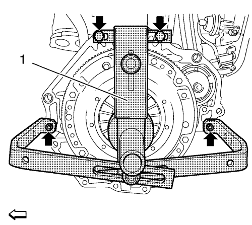
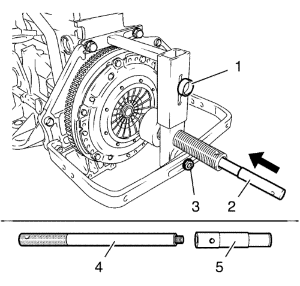
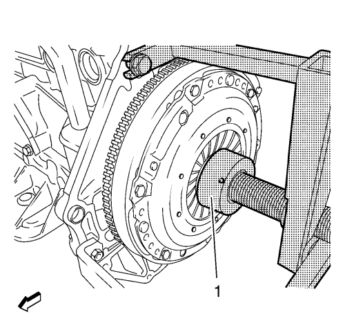
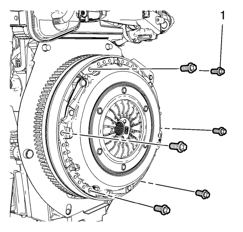
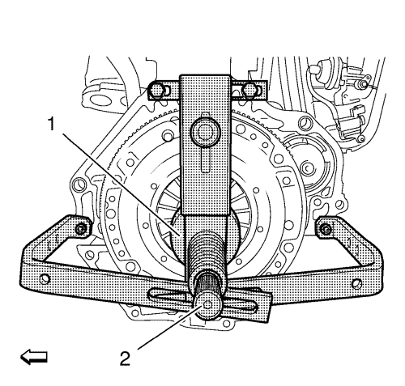
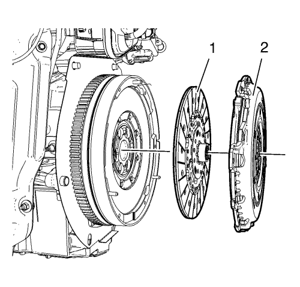
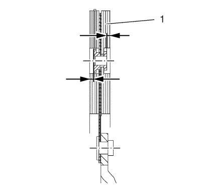

Nota:
| • | Para evitar daños en las lengüetas elásticas del plato de presión, utilice la herramienta DT-6263 para desmontar y montar el plato de presión del embrague. |
| • | Tenga en cuenta las diferentes longitudes de los soportes para acoplar la herramienta de desmontaje y montaje DT-6263 al bloque motor inferior. |
- Retire la caja de cambios. Consultar Sustitución de la caja de cambios .

Nota: La herramienta de montaje/desmontaje DT-6263 sólo puede acoplarse al bloque motor, y no al cárter de aceite.
- Acople la herramienta de desmontaje y montaje DT-6263 (1) al bloque motor.
Nota: No apriete los pernos todavía.
- Monte los 4 pernos (flechas) en el bloque del motor.

- Acople una guía central de embrague adecuada (5) al mandril de centrado DT-6263-30 (4).
- Fije la herramienta de desmontaje y montaje DT-6263.
| • | Alinee la herramienta de desmontaje y montaje DT-6263 en el centro. |
| • | Introduzca el mandril de centrado DT-6263-30 (2) junto con la guía central del embrague a través de la herramienta de desmontaje y montaje DT-6263 en el plato de presión del embrague y el centro del cigüeñal (flecha). |
| • | Apriete la rueda estriada (1). |
| • | Apriete los 4 pernos de la herramienta de desmontaje y montaje DT-6263 en el bloque motor. |

- Precargue los muelles del embrague usando la herramienta de desmontaje y montaje DT-6263.
| • | Mueva la herramienta de desmontaje y montaje (1) DT-6263 de modo que se apoye contra las lengüetas elásticas del plato de presión del embrague. |
| • | Gire la herramienta de desmontaje y montaje DT-6263 hacia la derecha hasta el tope. |

Nota: Deseche los tornillos.
- Desmonte los 6 pernos del plato de presión del embrague (1).

- Suelte la herramienta de desmontaje y montaje DT-6263 (1).
| • | Gire la herramienta de desmontaje y montaje DT-6263 hacia la izquierda, hasta el tope. |
| • | Desmonte el mandril de centrado DT-6263-30 (2) en conjunto con la guía central del embrague. |

- Desmonte el plato de presión (2) y el disco director del embrague (1).

Nota: Los platos de presión y los discos directores de embrague contaminados por cuerpos extraños (aceite, agentes de limpieza, etc.) tienen que ser sustituidos. Compruebe si el disco de embrague presenta daños y óxido de fricción en el perfil del cubo, y sustitúyalo si fuera necesario. No limpie el plato de presión ni el disco de embrague con un limpiador a alta presión o una máquina para lavar componentes.
- Revise el plato de presión y el disco de embrague (1), y sustitúyalos si es necesario.
Inspeccione si hay:
| • | Una superficie de fricción quemada |
| • | Aceite en la superficie de fricción |
| • | Un cubo de empalme dañado |
Nota: El disco de embrague tiene que sustituirse si el saliente del forro es inferior a 0,5 mm (0,020 pulg.) (flechas).
- Revise el saliente del forro en los remaches del forro del embrague.
- Deslice el disco de embrague contra el eje de entrada de la caja de cambios y compruebe si se mueve con facilidad.